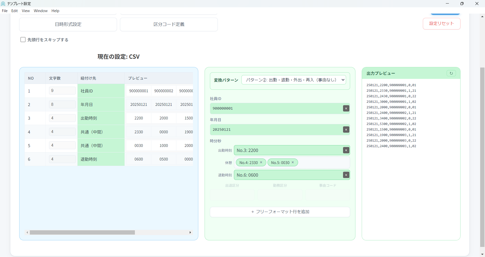
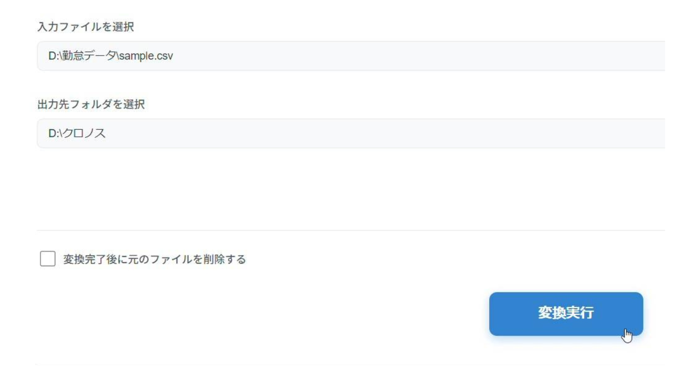
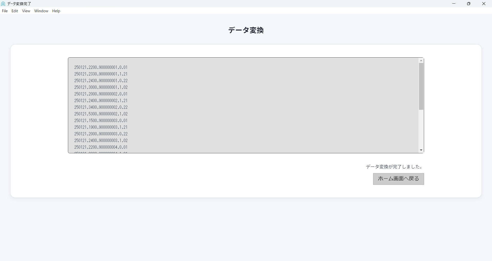

CSVや固定長ファイルをアップロードするだけでXronos Performance専用形式へ自動変換。
毎月の手加工・エラー修正から解放されます。

Raklink for Xronos Performance は、勤怠システムの打刻データをXronos Performance用フォーマットへ自動変換するデータ連携ツールです。CSVや固定長ファイルをアップロードするだけでクロノス用データを自動生成。
様々な勤怠データに対応する、柔軟で正確な変換エンジン。

取込開始行・区切り文字・文字コードなど、詳細な変換ルールをGUI上で設定。3つのパターンで、どんなデータにも対応します。
1つのファイルレイアウトを1つのXronosフォーマットへ変換。最もシンプルな構成。
1行の入力データを複数のXronosレコードに展開。複雑な打刻パターンに対応。
システム独自の区分コードをXronosの区分コードへ自由にマッピング設定。
取込開始行・区切り文字・日付形式など、詳細な変換ルールをGUI上で簡単に設定。プログラミング知識は不要です。
設定済みのレイアウトを選んで実行するだけ。変換結果はその場でプレビュー確認でき、エラーがあれば即座に通知します。

毎月繰り返す煩雑な手作業が、Raklink導入でたった1ステップに。
ご相談から運用開始まで、一貫してサポートします。
まずは無料でご相談ください。現在の運用状況をお聞きし、
最適な導入プランをご提案します。